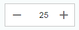
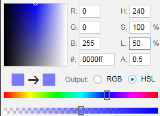

What's New in OpenUI5 1.38
In the following sections, we list the main new features and enhancements to OpenUI5. For a complete, detailed list of all new and enhanced functions, see: Change Log.
-
sap.m.FormattedText: You can use this control to display formatted texts in HTML format.For more information, see the API Reference and the sample.
-
sap.m.MenuButton: The control opens a hierarchical menu and enables quick triggering of the last action of the menu item selected. InRegularmode it always opens the menu, whereas inSplitmode it can be also used directly as a button to trigger the currently displayed menu item’s action. InSplitmode it can display either the default menu item or the last selected one.Regular Mode
Split Mode


For more information, see the API Reference and the sample.
-
sap.m.ObjectMarker: TheObjectMarkercontrol represents the status of an object with icon and/or text. It can be interactive (as a link) or non-interactive. It has the following predefined types:-
Flagged -
Favorite -
Draft -
Locked -
Unsaved
An object might have multiple
ObjectMarkers at the same time but the editing states (Locked,Draft, andUnsaved) are mutually exclusive.
For more information, see the API Reference and the sample.
-
-
sap.m.RangeSlideris a new input control that is used to select a range of values. TheRangeSliderhas two slider handles that can be moved along a predefined numerical range scale. This control extends thesap.m.Sliderand introduces additional functionality. -
sap.m.StepInput: TheStepInputcontrol allows the user to change the input value with a predefined step. The value can be changed using the increment/decrement buttons or keys on the keyboard. On the desktop, when using the keyboard PgUp and PgDn keys, the value increases/decreases two steps at a time.For more information, see the API Reference and the sample.
-
sap.ui.layout.ResponsiveSplitteris a layout control that is used to visually divide the content of its parent. The control is responsive and can adjust its contents to any screen size. On smaller screens, pagination is used to allow navigation to all splitter panes.
For more information, see the API Reference and the sample
-
sap.m.ComboBox:-
Is now supported on mobile phones. The list of available values will open as a full-screen dialog on small devices.
-
The new
loadItemevent makes it possible to defer initialization of items in theComboBoxdropdown list control to a point in time when the items are required. This helps to improve performance.For more information, see the sample.
-
-
sap.m.DatePicker,sap.m.DateTimePicker,sap.m.PlanningCalendar, andsap.ui.unified.Calendar: You can now set minimum and maximum dates to limit the range of available dates.For more information, see the API Reference for
sap.m.DatePicker,sap.m.DateTimePicker,sap.m.PlanningCalendar, andsap.ui.unified.Calendar, and the samples forsap.m.DatePicker,sap.m.PlanningCalendar, andsap.ui.unified.Calendar. -
sap.m.GenericTile: TheGenericTilecontrol has a new responsive design that significantly improves the user experience, it has also been optimized for larger smartphones. TheGenericTileadjusts its size to fit all the different display sizes of the current devices supported by OpenUI5 (see Browser and Platform Support). The main changes are the tile size, font size, padding, the newImageContentcontrol, and new samples showing the variety of use cases for theGenericTile.The
sap.m.ImageContentcontrol can be used to include images in a tile. It can be embedded in the content area of theGenericTilecontrol.For more information, see the API Reference for
sap.m.GenericTileandsap.m.ImageContent, the samples forGenericTileandImageContent, and Generic Tile. -
sap.m.Listandsap.m.Table: The newkeyboardModeproperty for theListandTablecontrols determines the keyboard handling for these controls. TheNavigationvalue of the property enables a mode that allows you to navigate within a large number of items, for example, table cells, using the tab key, whereas theEditmode can be used to edit a limited number of items. -
sap.m.MaskInput: You can now use escape characters in theMaskInputdefinition to be able to use the predefined rule characters as immutable ones. -
sap.m.MessagePopoverhas been improved and can now be resized. Resizing is only possible when theMessagePopoveris opened from the footer on a desktop.
-
sap.m.NotificationListItem: The control has two improvements:-
The control responsiveness is updated for better usability on large screens (more than 640 pixels width) – the buttons are now located on the right side of the text.
-
The Show More button for toggling expand/collapse mode can now be hidden with the use of the new property
hideShowMoreButton.
For more information, see the API Reference and the sample.
-
-
sap.m.Popoverhas four new values for itsPlacementType:-
PreferredBottomOrFlip -
PreferredLeftOrFlip -
PreferredRightOrFlip -
PreferredTopOrFlip
Popoverand how it behaves when there is insufficient space for it on the screen. These properties allow thePopoverto flip over and cover some of the content below it.For more information, see the API Reference and the sample.
-
-
sap.m.TextAreacan now grow and shrink to adapt to the entered text.For more information, see the API Reference and the sample.
-
sap.m.UploadCollection: To upload a new version of a file to theUploadCollectionlist, theopenFileDialogmethod is available. You can provide a pushbutton in the header area and if one entry in theUploadCollectionlist is selected, the API method will be called.For more information, see the API Reference and the samplet.
-
sap.m.ViewSettingsDialog: TheViewSettingsDialogcontrol now gives you the opportunity to modify filter detail page items on the fly with the help of the new eventfilterDetailPageOpened. This event is fired each time after the filter detail page is accessed, notifying the outside world that the page is loaded along with the information for which filter the respective details are displayed. This allows a handler to be attached that alters the filter detail items aggregation.For more information, see the API Reference in the Demo Kit.
-
sap.tnt.SideNavigation: Root items with no children can now be opened with a single click when theSideNavigationcontrol is in collapsed mode. -
sap.tnt.ToolPage: Animation is now added when expanding and collapsing theSideNavigationcontrol within theToolPage.For more information, see the sample.
-
sap.ui.commons.ColorPickersupports HSL (Hue Saturation and Lightness) mode. This mode works better with modern browsers and it does not require intermediate conversion back to RGB. Additionally, there is a new input field for thealpha(transparency) value for more precise color definition. -
sap.ui.layout.Formandsap.ui.layout.SimpleForm: You can now add a toolbar to a form container or the form itself.For more information, see the sample.
-
sap.ui.table.DataTablehas been deleted. -
sap.ui.table.TreeTablenow supportsAutoExpandpaging if it is bound to an OData model.By setting
numberOfExpandedLevelsas a binding parameter (e.g. in thebindRowscall of theTreeTable), you now can specify the initial expansion depth. This feature is only available for OData services exposing a property marked with the annotationhierarchy-node-descendant-count-for. This also means the service has to respect a$filterstatement on the annotatedLevelproperty, and returns the entries sorted. You can find the specification for this and all other hierarchy annotations in the SAP Community Network under SAP Annotations for OData Version 2.0 -
sap.ui.unified.Menu: To significantly increase the usability ofsap.ui.unified.Menu, a delay has been added to the closing of submenus.For more information, see the samplet.
-
sap.uxap.ObjectPageHeaderObjectPageHeader can be integrated with theSideContentscenario. A newsideContentButtonaggregation has been added. This aggregation has a new button, which appears after the actions buttons and triggers opening the side content for additional information.
For more information, see the sample.
-
sap.uxap.ObjectPageLayout:-
It supports scrolling to a particular section, based on its ID. This allows easier access to all parts of the application and consistent navigation back to a previous position within the
ObjectPage.For more information, see the sample.
-
Performance is improved for the use case with no
Blocks. TheObjectPagenow supports lazy loading with the stashed property of theObjectPageLazyLoader. As a result, you avoid the additional creation of XML views for eachBlock.For more information, see the sample and Object Page Scrolling.
-
Parent topic: Previous Versions